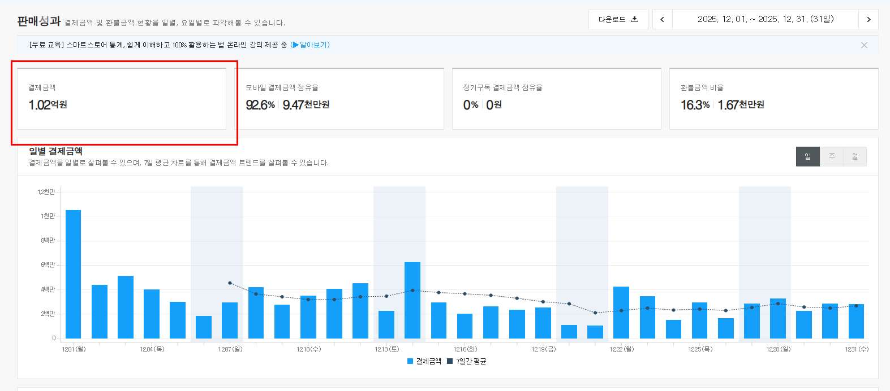

신입사원에게 전화 영업을 시키는 대신, 우리는 한 사람의 인연과 성과에만 집착했습니다. 그 진심이 쌓인 데이터와 직접 1억 원을 지출하며 발견한 '틈'을 공유합니다.
광고대행사지만 광고뿐 아니라 비즈니스 구조에 대한 깊은 갈증이 컸습니다. 이유는 단순 합니다.
광고 효율은 결국 비즈니스라는 그릇의 크기를 넘기 어렵기 때문입니다.
아무리 많은 유입을 만들어내도, 제품의 마진 구조가 무너져 있거나 전환이 일어날 수 없는 상세페이지라면 결국 광고주는 돈을 잃게 됩니다. 우리는 밑 빠진 독에 물을 붓는 광고주를 수없이 봐왔고, 그건 결코 우리가 지향하는 ‘지속가능한 성과’가 아니었습니다.
그래서 단순히 광고 세팅, 숫자만 보는 것이 아니라, 고객사의 수익 모델과 제품의 본질을 깊게 분석하고 실행해왔습니다. 팀원들과 모여 이런 질문들을 던지며 토론합니다.
이렇게 비즈니스 전체의 흐름을 추적하며 논의를 거듭하다 보니, 기술적인 광고 세팅에만 매몰된 기존 시장에서는 대부분 관심 두지 않던 결정적인 ‘틈’이 보이기 시작했습니다.
"누군가는 1,000만 원으로 매출 1억을 만드는데, 왜 누군가는 같은 돈으로 1,000만 원조차 못 벌까요?"
광고 매체라는 도구는 모두에게 평등하게 주어집니다. 하지만 결과가 극명하게 갈리는 이유는 매체 숙련도가 아닙니다.
남들이 기술적 세팅이라는 껍데기에만 집중하느라 놓치고 있는 비즈니스 관점의 ‘콘텐츠’와 소재’, 우리는 바로 그곳에서 성과를 높일 결정적인 기회로서의 ‘틈’을 발견했습니다.
대부분의 대행사가 ‘노출 방식’과 ‘최적화 세팅’에 매몰될 때, 우리는 고객이 광고를 보고 구매 버튼을 누르기까지의 흐름을 설계합니다
단순히 유입만 늘리는 것은 비즈니스에 실질적인 성과를 가져다주기 어렵기 때문입니다. 우리가 정의하는 이 전략적인 ‘틈’은 다음의 두 가지에서 시작됩니다.
단순한 예쁜 디자인이 아닌, 제품의 마진과 타겟 특성을 반영한 전략적 메시지를 설계합니다.
막연한 소재 투여가 아닌, 철저한 분석을 통해 고객이 반응할 수밖에 없는 페인 포인트(Pain Point)를 찾아냅니다.
이 과정을 통해 구매로 가는 문턱을 낮추는 것이 우리의 핵심 역량입니다. 비즈니스의 본질을 분석하고 이를 콘텐츠로 집요하게 구현해내는 것. 이 사소해 보이는 한 끗 차이의 '틈'이 결국 수억 원의 매출 격차라는 결과로 나타납니다.

2025년 12월 한 달 매출 1.02억 원 달성 데이터
콘텐츠와 소재라는 틈을 집요하게 파고든 결과입니다.
이 기록은 남의 성과를 빌려온 것이 아닙니다. 블루커뮤니케이션즈가 직접 리스크를 지고 시장에서 증명해낸 결과물입니다.
우리가 발견한 '틈'이 실제 시장에서 어떻게 매출로 전환되는지 확인하고 싶었습니다.
그래서 마케팅 업계에서 어렵다고 소문난 ‘가구’시장에 직접 뛰어들어 우리의 가설을 검증하기로 했습니다.
가구는 가격이 높고 신중하게 구매하는 '고관여 제품'임에도 불구하고, 시장의 광고 소재들은 대부분 예쁜 사진만 강조하는 '천편일률적인 방식'에 머물러 있었기 때문입니다. 우리는 그곳에서 콘텐츠의 힘으로 승리할 수 있는 명확한 '틈'을 보았습니다.
결과는 성공적이었습니다.
런칭 후 6개월 매출 5억 원을 달성했고, 마침내 12월 한 달 매출 1억 원을 돌파하며 가파른 성장 궤도에 올랐습니다.
이 과정에서 우리가 한 일은 단순했습니다. 비즈니스 구조를 분석하고, 그에 맞는 콘텐츠와 소재를 설계하고 만드는 일을 무한히 반복했습니다.
기교보다는 본질에, 기술적인 세팅보다는 고객의 마음을 움직이는 소재의 힘에 집중했습니다.
직접 브랜딩부터 판매까지 전 과정을 실행하며 얻은 이 데이터는, 우리가 정의한 '틈'의 가설이 실제 숫자로 증명될 수 있음을 보여주는 가장 확실한 이정표가 되었습니다.
어제 통했던 정답이 오늘은 효과적이지 않을 수 있습니다. 소비자의 패턴은 계속 변화하니까요.
하지만 우리는 자신 있습니다. 실력은 광고 기법이 아니라 변화 속에서도 변하지 않는 비즈니스의 본질에 있기 때문입니다.
내일의 시장에서 또 다른 성장의 발판이 필요할 때, 우리는 우리만의 방식으로 당신의 비즈니스를 위한 '틈'을 제안하겠습니다.